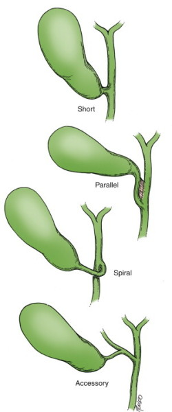
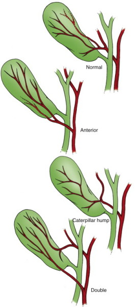

Lap
Chole
Special Preparation
Gallstone
disease
Biliary dyskinesia with EF<35% (only resolves symptoms in 75%)
Porcelain gallbladder
Enlarging polyps
Poss. very large gallstones >3cm
Contraindications
Acute cardiopulmonary disease
Advanced cirrhosis
Consider open approach if necrosis, perf, cancer, Mirizzi's, duct
stones w sepsis and failed clearance,
Pregnant?
Defer if possible
2nd trimester = most amenable.
- 1st = high miscarriage rate
- 3rd = limited access
Prep
Arms in
Prep nipples to groins
Incision
Hasson
Start low flow and then high flow, 15mmHg pressure
10mm epigastric port, then 5mm midclavicular and 5mm anterior
clavicular line in r lateral abdomen
Procedure
Grasp and elevate fundus toward pt's right shoulder, opening
Calot's triangle
Grasp and elevate Hartmann's pouch upwards toward Falciform, and
that traction is maintained
Open peritoneum posteriorly and anteriorly along base of
gallbladder, using hook diathermy and upwards on liver attachments
Carefully develop critical view, using a judicious combination of
limited hook diathermy, gentle blunt dissection, sweeping and gentle
teasing motion.
- tend to limit use of hook early in dissection until anatomy clear
- this step is finished when clear anterior and posterior windows,
cystic duct attachment to liver clearly defined and clean.
Clip cystic artery.
Perform IOC
- e.g. concord needle, proximal duct clip, contrast.
Clip and divide cystic artery and duct
Take GB off liver bed.
Haemostasis
Washout
Close
Post-Op
-
Complications
Conversion
Normal rate perhaps 5%, but up to 25% in severely inflamed cases.
Spilled stones
Try to retrieve them.
High rate of infectious and other complications.
Can cause erosions.
Bleeding
Tamponade
Suction and visualization
Grasp; may need a fifth trocar, e.g. between umbilicus and
epigastric sites, working bimanually with suction and dissection to
allow safe control.
Convert if not rapidly achieved.
Hepatic bed bleeding usually controlled with pressure, limited spray
cautery, prothrombotic agents eg surgicel.
Bile duct injury
Rare, perhaps 1:200 in experienced hands
Best avoided:
- good port placement, visualization, retraction, opening of Calot's
- liberal use of IOC
- careful clearance of and control of bleeding
- particular care in advanced inflammatory disease
Partial tear / oblique injuries --> place a T tube
Full thickness transections --> place a drain, transfer to
experienced surgeon for a Roux-en-Y hepaticojejunostomy
Bile leak
Scan, drain, ERCP, stent.
Change in bowel habit
Up to 25% in early period, usually settles.
Supplement fibre.
Port site hernia
Esp. umbilical.
Know anatomical variants


Alternatives and Controversies
Routine IOC?
Yes. Show anatomy.
Possibly minimize risk of duct injury.
Early identification of duct injury.
Pickup of retained duct stones.